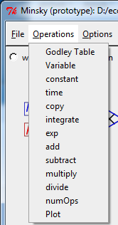
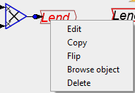

There are three ways to insert a component of a model onto the Canvas:
- Click on the desired Icon on the Icon Palette, drag the block onto the Canvas and release the mouse where you want to insert it
- Choose Operations from the menu and select the desired block there

- RIght-click on an existing block and choose copy. Then place the copy where you want it on the palette.
